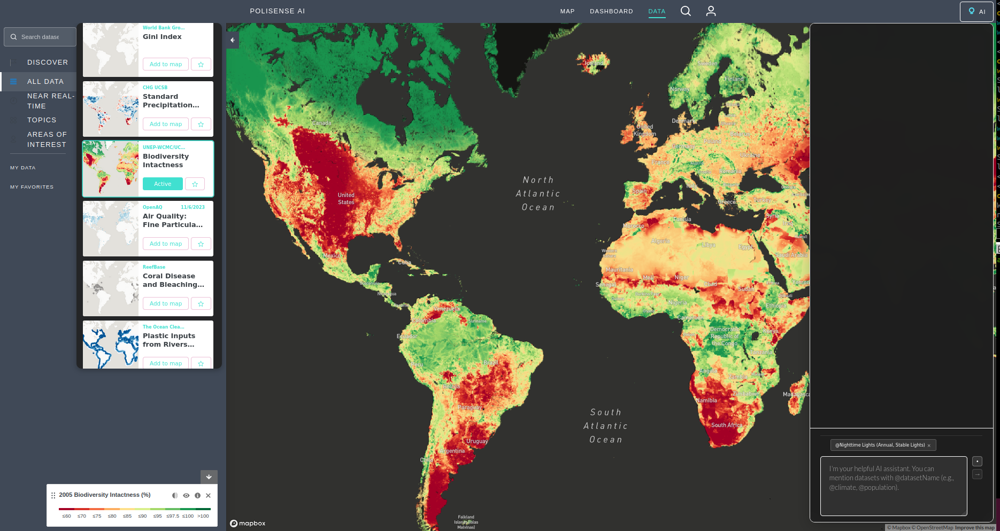

Polisense.AI
Cloud-based AI platform for energy poverty analysis and urban planning with real-time analytics for city governments
Overview
Polisense.AI is deployed on a cloud-native infrastructure to ensure scalability, security, and global accessibility. Developed for the AI x City Climate Action Hackathon 2025, this cloud-based architecture enables real-time analytics for city governments while maintaining robust data governance. The system processes data streams from multiple sources, transforms them through AI pipelines, and delivers actionable insights through interactive dashboards and API endpoints.
Key Features
- Multi-region support for global cities
- Integration with government ERP systems through secure middleware
- High availability via Kubernetes orchestration
- Scalable storage for large geospatial datasets and AI models
- Real-time analytics for city governments
- Interactive dashboards and API endpoints
- Robust data governance and security
Technical Architecture
Backend Architecture (webApi)
The backend serves as the AI-driven brain of the platform, managing data ingestion, analysis, and orchestration of research tasks.
- Core Technologies: Express.js, TypeScript, PostgreSQL, Redis, Weaviate
- AI Research Pipeline: SearchQueriesGenerator, SearchQueriesRanker, ResearchWeb, SearchResultsRanker, WebPageScanner
- Real-Time Processing: WebSocket-based streaming, continuous token monitoring, session persistence
Frontend Architecture (ResourceWatch)
The frontend ensures intuitive interaction with complex data layers, enabling decision-makers to visualize energy poverty patterns and prioritize interventions effectively.
- Key Technologies: Next.js & React, Redux, Mapbox GL + Deck.gl, Material-UI & Tailwind CSS
- Core Capabilities: Layered visualization, real-time dashboards, interactive policy simulation, widget-based UI
Data Flow & Integration
- Data Ingestion: Aggregates satellite imagery, demographic data, and infrastructure maps
- AI Processing: Normalizes and scores neighborhoods based on Need, Feasibility, and Impact
- Visualization: Presents insights via dynamic maps and interactive dashboards
- External Integration: ResourceWatch API, Google Earth Engine, government ERP middleware
Visual Results
Technologies Used
Project Impact
Polisense.AI revolutionizes urban planning and energy poverty analysis by providing city governments with real-time, data-driven insights for informed decision-making. The platform enables municipal leaders to identify energy access gaps, prioritize interventions, and optimize resource allocation through AI-powered analysis of satellite imagery, demographic data, and infrastructure maps. By integrating seamlessly with government ERP systems and providing interactive dashboards, Polisense.AI empowers cities to address energy poverty systematically and efficiently.
Documentation & Source Code
Explore the comprehensive whitepaper detailing the technical implementation and methodology:
View WhitepaperNote: The source code is not currently available but will be published as soon as the AI x City Climate Action Hackathon 2025 concludes.